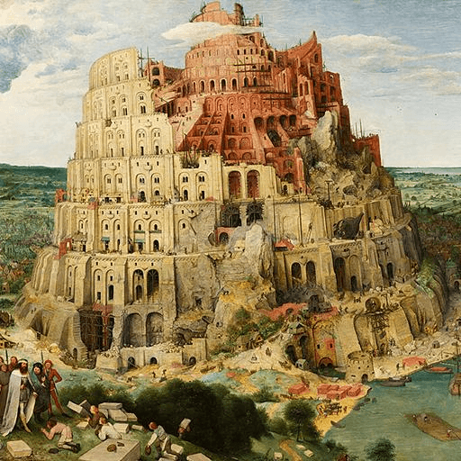

第45卦 澤地萃：人群裡的重逢
上卦：澤（☱） ・ 下卦：地（☷）

核心意義
這是匯聚的時期：人氣聚集、資源匯流、眾心歸一。凝聚的力量遠勝單打獨鬥，此刻適合聚集志同道合的人共同成就大事；以真誠為基礎凝聚人心，以明確的目標引導力量，相聚便能成事。
「我凝聚眾人之心與力，在相聚中成就更大的豐盛。」
祝福
願志同道合的人自然而然地聚集在你身邊，一起成就更大的美好。
五大類別指引
感情
你們的心正走向匯聚，彼此都想更靠近、更融入對方的生活。這是關係升溫的契機；主動邀請對方進入你的世界、參與彼此的重要時刻，讓兩顆心在相聚中更加緊密。
主動邀請對方進入你的世界：
- 參與彼此的重要時刻。
- 讓兩顆心在相聚中更緊密。
事業
人氣與資源正向你匯聚，團隊擴張、合作增加或影響力提升。把握凝聚的力量；把對的人聚集在一起、建立清楚的共同目標，讓這股匯聚的能量成就更大的事。
聚集對的人，建立共同目標：
- 把握匯聚的能量成就大事。
- 讓每個人都清楚自己的位置。
健康
健康也需要匯聚眾人之力，不必獨自面對。尋求專業團隊的支持、加入互相鼓勵的社群，或與家人一起調整生活；當你不再孤軍奮戰，健康的改善會更有力量。
尋求專業團隊與社群的支持：
- 與家人一起調整生活方式。
- 不孤軍奮戰，健康更有力量。
財運
財務機會正透過人脈與群體匯聚，合作與共享資源可能帶來收益。把握群體的力量；參與可信賴的投資或合作團體，同時確認共同的目標與規則，讓匯聚的資金有清楚的方向。
參與可信賴的合作與共享資源：
- 確認共同目標與規則。
- 讓匯聚的資金有清楚方向。
人際
你正處於人氣匯聚的時期，受邀變多、身邊圍繞著願意親近你的人。這是很適合經營社群與歸屬的時刻；珍惜每一次相聚，真誠對待每一位願意靠近的人，你的人脈會成為你的力量。
珍惜每一次相聚，真誠對待每個人：
- 經營歸屬感與社群連結。
- 人脈會成為你的力量。